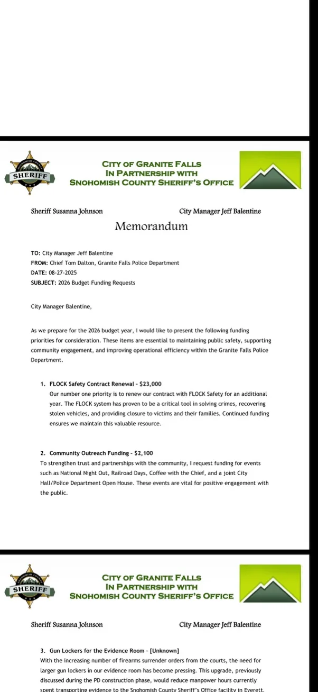

Get the Flock Out of Granite Falls.
Granite Falls contracted for seven Flock Safety automated license plate reader cameras. This project tracks the contract, the money, the camera locations, the City's own correspondence, and the rules now governing the system under Washington law.

What the documents show.
The local record establishes what Granite Falls bought, what it paid, where Flock planned the cameras, how officials discussed public-records issues and renewal, and what changed when Washington adopted new ALPR restrictions in 2026.
The October 2024 invoice lists seven Falcon cameras and implementation services. City payment records show $26,784.05 paid to Flock Group on Nov. 6, 2024.
Permit 2024-019 states six solar-powered ALPR installations in City right-of-way and includes the overview map and six location-detail plan sheets.
Internal emails show City officials, police and counsel discussing records problems other Washington jurisdictions were encountering with Flock data, including Stanwood's 2025 dispute.
Chief Tom Dalton's Aug. 27, 2025 budget memorandum identified Flock contract renewal as the police department's “number one priority.”
ESSB 6002 added a general 21-day retention limit, restricted-location rules, sharing controls, registration requirements, audit trails and annual internal audits.




What has happened so far.
The campaign's goal is to end Granite Falls' use of Flock Safety ALPR cameras through public oversight, Council debate and an accountable vote.
Public records obtained
Contracts, invoices, payment records, deployment plans, internal correspondence and Council material have been reviewed and organized.
Public comment
Flock concerns have been raised directly with the City through public comment and Council meetings.
Meeting attendance
City agendas and packets are being followed as Flock, renewal and Washington-law compliance return to Council.
Public outreach
The website, flyers and community outreach make the City's own records easier to review without requiring residents to sort through large production files.
What still needs scrutiny.
The current record raises questions about retention, school-area collection, sharing, access, audit controls and the practical reach of a privately hosted surveillance network.
Contract capability + state guardrails
The executed Order Form describes FlockOS capabilities including time-and-location search, license-plate lookup, “Vehicle Fingerprint Search,” state-network access, nationwide-network lookup, custom hot lists and real-time alerts.
100th Street NE at Penny Avenue
The permit plan identifies Location #07 as eastbound 100th Street NE at Penny Avenue. ESSB 6002 now expressly restricts ALPR collection at elementary and secondary schools and certain immediately surrounding areas.
The plan establishes the intended location and orientation. It does not, by itself, establish the camera's exact current electronic field of capture or whether the site was later changed.
Review the school-camera record →Flock in Washington and beyond.
Events elsewhere do not establish what happened in Granite Falls. They do show how Flock's network, public-records obligations, access controls, state law and documented misuse have been tested in other jurisdictions.
University of Washington documents federal access to Washington Flock networks
UW Center for Human Rights analyzed Flock audits from Washington agencies and reported multiple pathways by which federal immigration authorities accessed or searched local ALPR networks.
Washington cities turn off Flock cameras after records ruling and UW report
KUOW examined municipal shutdowns and the growing Washington controversy following a public-records ruling and the University of Washington findings.
Lynnwood terminates its Flock contract
Lynnwood terminated its Flock contract after months of debate over privacy, outside access and public trust.
Washington agencies pause ALPR systems under new restrictions
KUOW reported that agencies including Seattle and Kent paused some ALPR use while working through SB 6002's location and retention rules.
Renton votes to physically cover Flock cameras
After pausing ALPR use in May, Renton City Council voted to cover its Flock cameras while the policy dispute continued.
National scrutiny expands
Recent reporting includes an alleged officer-misuse case involving an ex-partner and a U.S. Senate inquiry into Flock's collection, retention and dissemination practices.
Read the underlying records.
The site uses screenshots to focus attention on relevant portions, while complete versions of the principal contract, permit and enacted state law remain available for full context.
Require a public decision.
The campaign asks that any continuation of Granite Falls' Flock system be debated publicly with the contract, current law and local record in front of the Council.